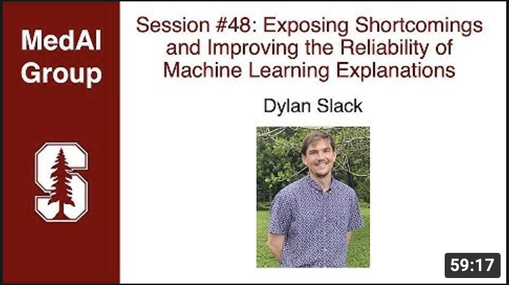
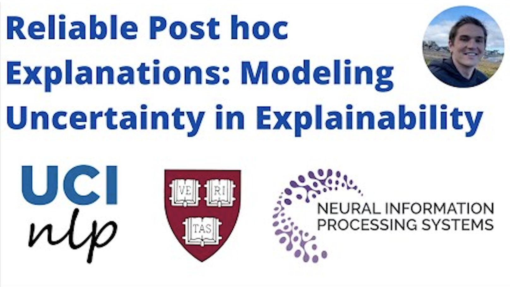
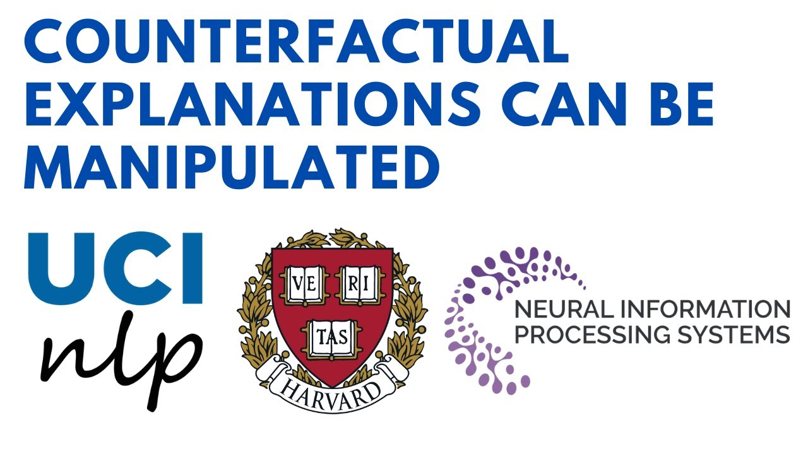
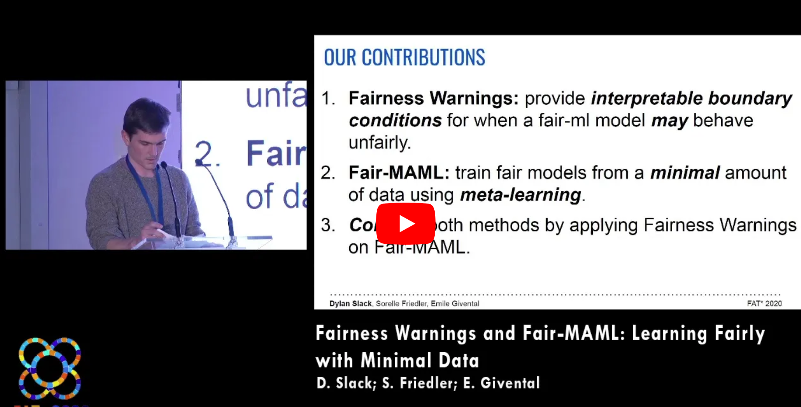

|
Dylan Slack
dslack@uci.edu
Hello! I am a machine learning researcher. Currently, I'm a research scientist at Google, where I work on Gemini. Previously, I recieved a Ph.D. from UC Irvine advised by Sameer Singh and Hima Lakkaraju. My Ph.D. was generously supported by an HPI fellowship. I interned at AWS in 2020 and Google AI in 2021 👨💻.
CV /
Google Scholar /
Github /
Twitter /
Notes
|
|
|
Research
Please find my research works here. * Denotes equal contribution.
|
A Careful Examination of Large Language Model Performance on Grade School Arithmetic
Hugh Zhang,
Jeff Da,
Dean Lee,
Vaughn Robinson,
Catherine Wu,
Will Song,
Tiffany Zhao,
Pranav Raja,
Dylan Slack,
Qin Lyu,
Sean Hendryx,
Russell Kaplan,
Summer Yue
NeurIPS D&B, 2024
arXiv
|
Active Meta-Learning for Predicting and Selecting Perovskite Crystallization Experiments
Venkateswaran Shekar,
Gareth Nicholas,
Mansoor Ani Najeeb,
Margaret Zeile,
Vincent Yu,
Xiaorong Wang,
Dylan Slack,
Zhi Li,
Philip Nega,
Emory Chan,
Alexander Norquist,
Joshua Schrier, and
Sorelle Friedler
Journal of Chemical Physics, 2022
|
Context, Language Modeling, and Multimodal Data in Finance
Sanjiv Ranjan Das,
Connor Goggins,
John He,
George Karypis,
Sandeep Krishnamurthy,
Mitali Mahajan,
Nagpurnanand Prabhala,
Dylan Slack,
Robert Van Dusen,
Shenghua Yue,
Sheng Zha, and
Shuai Zheng
The Journal of Financial Data Science, 2021
Journal Link /
bibtex
|
|

|
Speaking to the MedAI Group at Stanford
|
|

|
Presenting Reliable Post hoc Explanations: Modeling Uncertainty in Explainability
|
|

|
Presenting Counterfactual Explanations Can Be Manipulated
|
|

|
Speaking at FAccT, in Barcelona, Spain.
|
|
{kind=link}